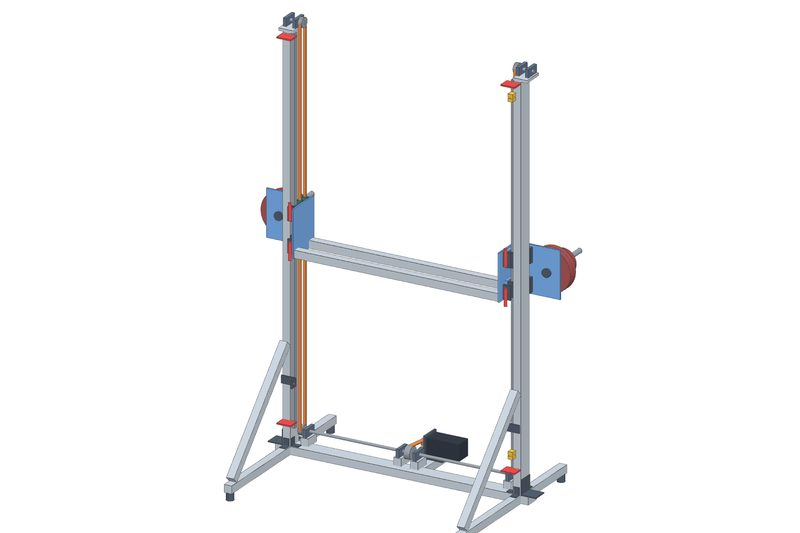
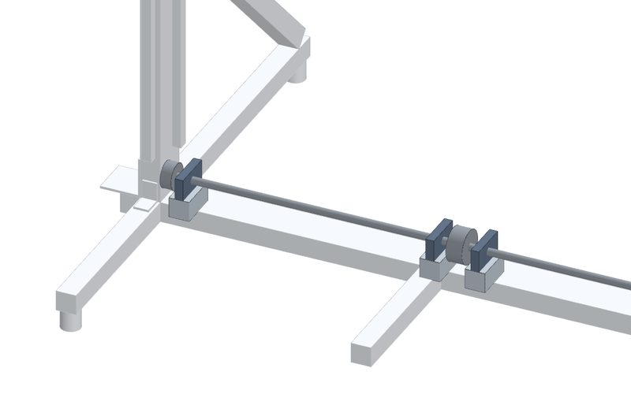
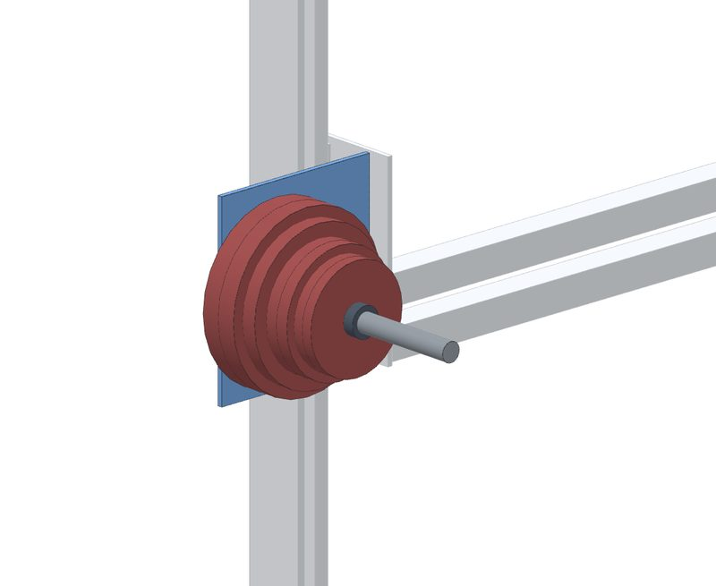

A test rig that moves a drone dock like a boat deck in swell
Landing on a boat means landing on a deck that rises and falls 1.5 m. To test that on land I designed a two-tower, belt-driven rig that heaves the dock's platform, up to 30 kg, at up to 0.8 m/s, and is designed to hold it on power loss, E-stop or a driver fault.

- Where
- MIT Beaver Works, Hart lab, undergraduate research
- Dates
- October 2026 to present
- My part
- Requirements, mechanism selection, sizing, layout and build
- Size
- About 2.2 m tall, 1.4 m wide, 1.0 m deep. 1.10 m clear between carriages.
- Parts
- 40-series aluminum extrusion, HGR20 rails, HTD-5M belts, closed-loop NEMA 34 stepper with brake, Teensy 4.1
- Budget
- $2,500 cap. Parts list came to $2,444.
- Credit
- Motion spec (1.5 m, 0.8 m/s) from Vasu Kaker
The rig is built and running. This page is about how it was designed: the image above is the layout model the build was planned from, and every number below is a design calculation. Test results against each requirement are not on this page yet.
The problem
The drone dock will ride on a boat whose deck is expected to heave 1.5 m in total at up to 0.8 m/s. The lab's existing platform tilts in pitch and roll but cannot heave. The brief was short: 1.5 m of stroke, 0.8 m/s, and not the slow linear actuators already in the lab.
The rig has to carry that pitch and roll platform on top, so both motions run together, and leave open sky above it for the drone.
Requirements first
Each requirement is paired with the test that will check it.
| Requirement | Value | How it gets checked |
|---|---|---|
| Stroke and speed | 1.5 m, 0.8 m/s, 1.0 m/s² design acceleration | Encoder log |
| Accuracy and tilt | Within 5 mm of command, under 0.5° of unwanted tilt | Laser distance sensor, IMU |
| Payload | 15 kg nominal, 30 kg maximum, 150 mm off center, plus a 5 kg drone landing at 1.3 m/s | Load and sandbag drop tests |
| Stiffness | Lowest structural mode at or above 5 Hz | Tap test |
| Safety | Holds on power loss, E-stop or driver fault. Three layers of travel limits. | Functional tests |
| Space | 1.05 m clear width, open top, under 2.4 m tall | Tape measure |
| Program | Off-the-shelf parts, $2,500 cap, one 120 V outlet | Parts list |
Choosing the mechanism
Eight ways to make linear motion, screened against 1.5 m of stroke at 0.8 m/s. Stroke turned out to decide it.
| Concept | Verdict | Why |
|---|---|---|
| Electric rod actuator | Out | Built for force. At a typical 20 to 50 mm/s a stroke takes about 30 s instead of 3. |
| Lead screw | Out | An 8 mm lead needs 6,000 rpm. A 1.7 m screw whips near 1,000 rpm. |
| Ball screw | Out | Even a 20 mm lead needs 2,400 rpm against a whip limit near 840 to 1,210 rpm. |
| Scotch yoke | Out | The crank radius equals the amplitude, 0.75 m. Fixed sine only. |
| Scissor lift | Out | Force varies about six times over the stroke, and the pin joints add play. |
| Rack and pinion | Backup | Works, but backlash knocks at every reversal. |
| Cable and drum | Alternate | A cable can only pull, which caps the counterweight at 12.6 kg for a 15 kg payload. |
| Belt and pulley | Chosen | Nothing long spins, stroke only costs belt, and a closed loop allows full counterweighting. |
For the frame I chose a goalpost: two towers with the platform between them, supported on both sides and open above. One motor drives a jackshaft that joins both towers' belts, so the two sides are synchronized by steel and cannot rack if a motor stalls.


What the sizing showed
Counterweights cut the motor torque by 4.6 times
Without counterweights the motor lifts the platform's weight on every cycle. With the platform balanced it only supplies inertia and friction: peak torque drops from 4.40 to 0.96 N·m for the nominal 15 kg payload. The balance also nearly removes the vertical force the machine puts into the floor.
The motor is not sized on that number. It is sized on the worst load case, 30 kg of payload with a 5 kg drone sitting on it unbalanced, at the corner of the operating envelope: 2.19 N·m.

The brake picked the motor
A balanced machine has a new problem: it coasts. With power lost, friction alone slows it at 0.22 m/s², so it would travel 1.46 m, nearly the whole stroke, into the end stops. With a drone on board it drifts down and arrives with up to 44 J.
So the motor is a closed-loop NEMA 34 stepper with a brake that engages whenever it is unpowered, through a 2:1 belt reduction that halves the motor torque and doubles the brake's hold. The brake gives 419 N at the belt and stops the worst case from full speed in 127 mm. A NEMA 23 would have been about $110 cheaper and has no brake.
The rest of the checks
- Tilt: 0.026° with 30 kg sitting 150 mm off center, against a 0.5° budget.
- Jackshaft: 15 mm keyed steel has a fatigue safety factor of 1.6 under deliberately pessimistic keyseat assumptions. A 12 mm shaft falls below 1.
- Bearings: the worst-loaded one has a rated life of 2,860 hours against a 500 hour requirement.
- Regeneration: stopping the unbalanced worst case returns about 49 J that the power supply cannot absorb. A diode and three 4,700 µF capacitors are sized to hold the bus under 80 V, below where the driver trips.
What the review caught
Before ordering anything I had every calculation re-derived in a separate pass that started from the input list, not from my conclusions. It confirmed most of the design and found four problems, all fixed on paper instead of on the machine.
A belt that could go slack during a landing
The first belt model split the drive force evenly between the two lower spans. Near the bottom of the stroke one span is under 0.1 m long and many times stiffer than the other, so it takes almost all of any change in load. At 150 N of pretension a drone landing or a brake stop there would take that span to minus 18 N, which means slack.
Pretension went from 150 to 250 N. The lowest tension in any span, in any case, is now 82 N and the highest is 540 N against a 1,120 N rating.

A driver fault that would have left the brake released
When the stepper driver trips, which is likely while tuning, it frees the motor shaft. The safety relay would still be holding the brake released, so the platform could coast or drift. One more relay, driven by the driver's own brake output and wired in series, means the brake only releases when the safety chain is closed and the driver is healthy.
A structure that was softer than first estimated
The side-to-side mode dropped from 5.7 to 5.1 Hz once the cross members' own bending was counted, and the target is 5 Hz. That is marginal, and real bolted joints are softer than the rigid ones in the model. I added gussets at the tower bases and kept a second bolt-in fix ready. A tap test is the check that settles it.
The fourth finding: in non-sinusoidal profiles peak speed and peak acceleration can coincide, so the two are now limited together.

Fail-safe in layers
- Firmware clamps commands to the stroke.
- Overtravel switches 20 mm past each end open a hard-wired safety chain: brake on, driver disabled. The microcontroller reads the chain but is not part of it, so a software crash cannot defeat it.
- The brake engages on any loss of power.
- Shock absorbers 80 mm past each end take whatever speed is left: 13.0 J each after a full-speed brake stop, and 15.4 J each from full speed with no brake at all, against a 19.6 J rating.
- Pins lock the platform at the bottom while the payload is changed.

Cost
The target was $1,500 and the cap $2,500. The parts list came to $2,444. Four things separate it from the cheaper machine, and each one traces to a requirement: the brake motor and driver ($192), the second rail kit for the counterweights ($130), the shock absorbers ($149), and 2 m of heavy extrusion per tower ($305).